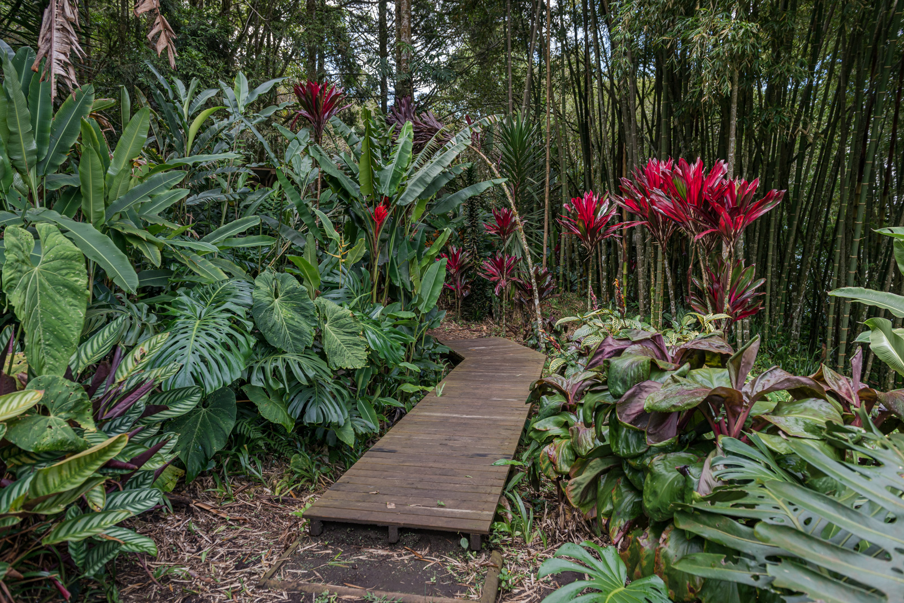
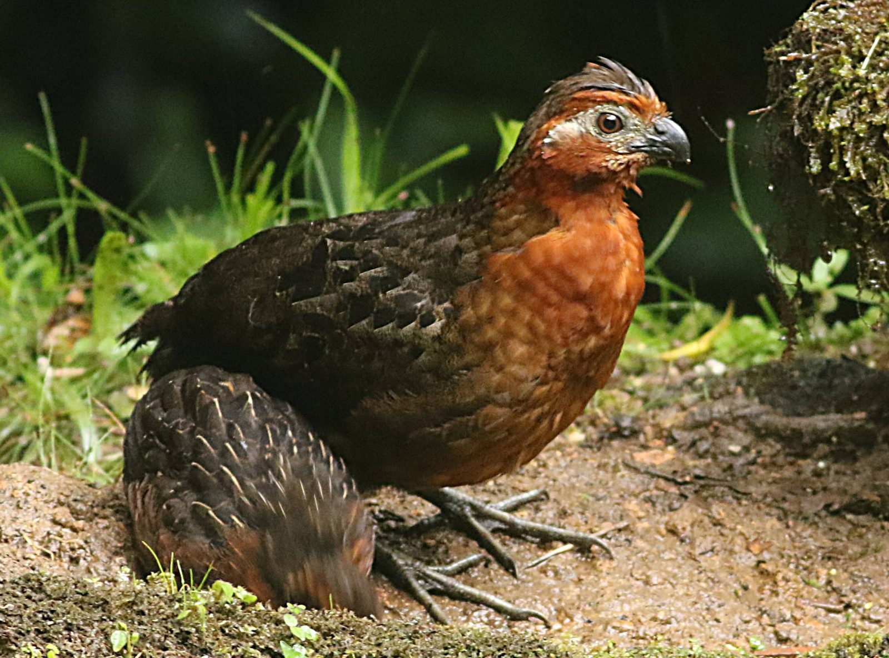
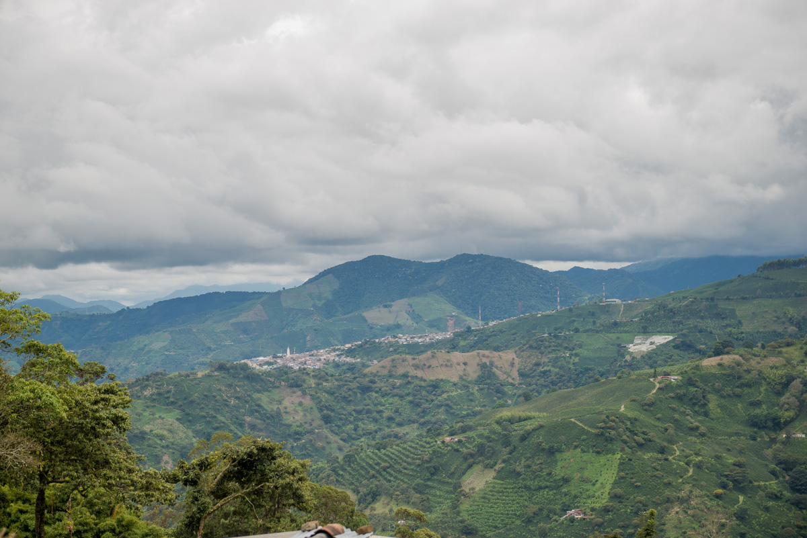
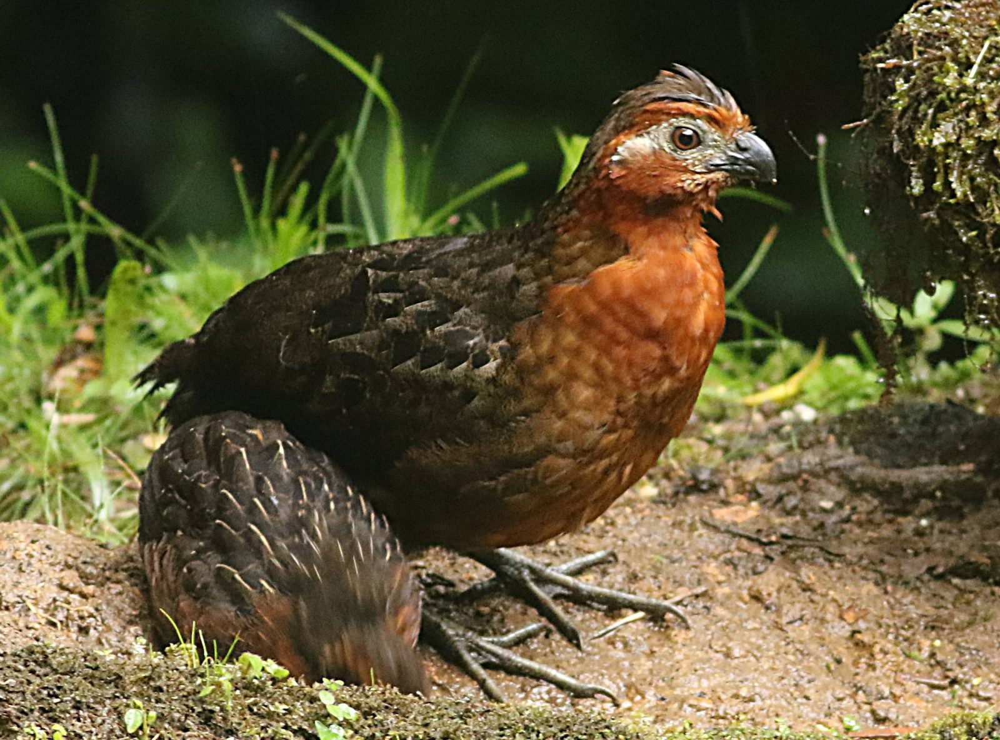
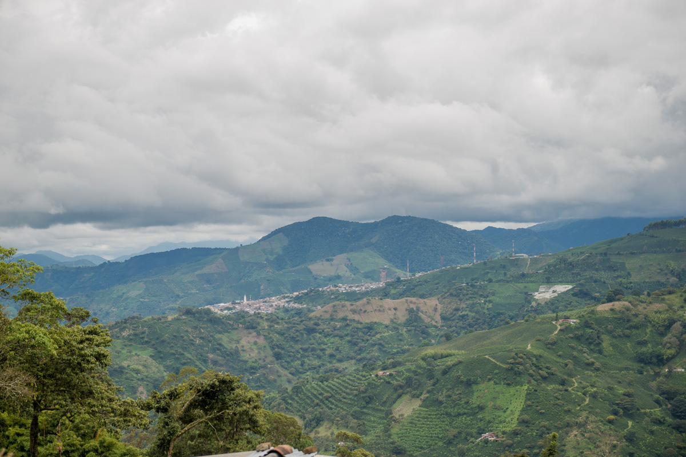
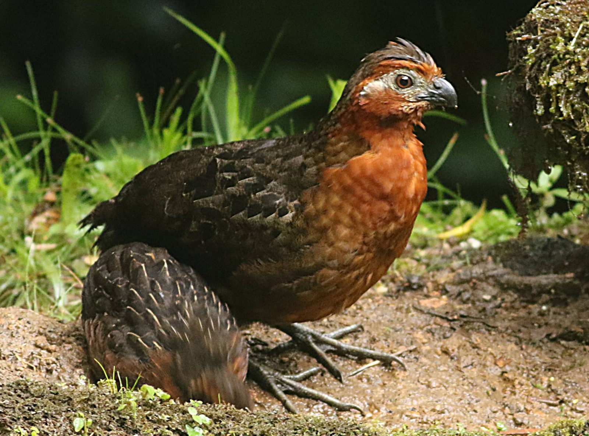
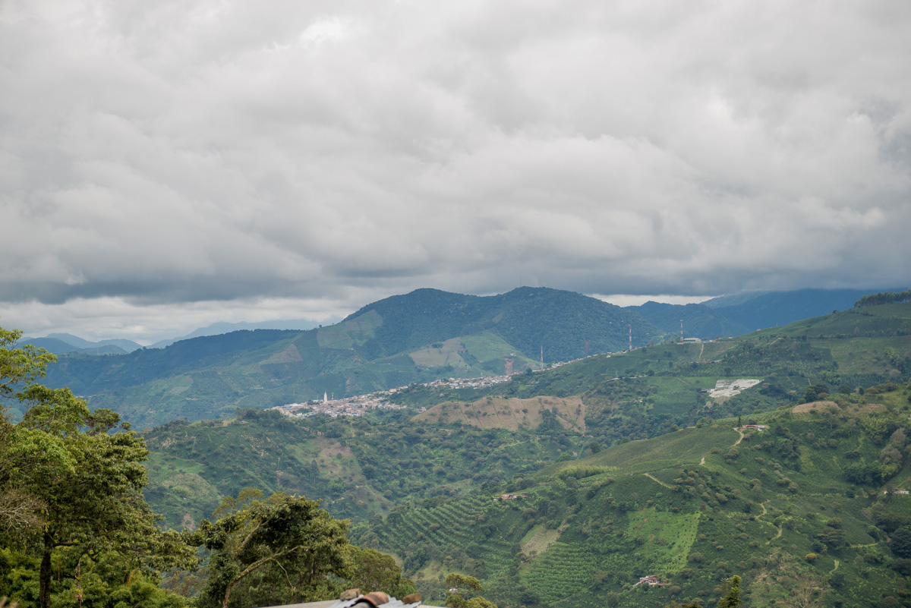

Reserva Natural DMI Agualinda
Apía, Risaralda

 





Descripción
La Reserva Natural Distrito de Manejo Integrado Agualinda es un área protegida situada en Apía, Risaralda. Sus senderos, accesibles en jeep, permiten explorar bosques andinos húmedos durante recorridos de 1 a 2 horas, ofreciendo oportunidades para avistar aves endémicas y disfrutar de la rica biodiversidad nativa.
Características
- 🌲 Bosque andino húmedo
- 🦜 Aves endémicas
- 🚶♂️ Senderos señalizados
- 🌿 Flora diversa
- 🚙 Acceso en jeep
- 📸 Puntos fotográficos
- 🏞️ Vistas panorámicas
Horarios y Precios
Horario:
6:00 AM - 4:00 PM
Días:
Todos los días
Duración recorrido:
1-2 horas
Restaurantes cercanos
-
Restaurante El Reposo – Donde Canelo
- Cocina casera
- Ambiente familiar
- Top en Apía
-
Come & Vive Restaurante Gourmet
- Platos creativos
- Carta variada
- Experiencia gourmet
-
Don Plátano Apía
- Especialidad en plátano
- Tradición paisa
- Altamente valorado
-
Café de Mi Pueblo Apía
- Asientos al aire libre
- Desayunos típicos
- Ambiente tradicional
-
Panadería Yuyo
- Pan artesanal
- Servicio de café
- Ideal para desayunos
Alojamientos cercanos
-
Hotel Junior Plaza Apía
- A 1.1 km de la reserva
- Parking y minibar
- 10 habitaciones equipadas
-
Abuela Casa Hostal Apía
- A 1.3 km de la reserva
- Patio y jardín
- Vistas a la montaña
-
Misiá Emilia Café – Hostal Apía
- A 1.2 km de la reserva
- Bar con billar y karaoke
- 8 habitaciones con patio
-
Hospedaje Mirador La Floresta
- Top en TripAdvisor
- Vistas al valle
- Habitaciones sencillas
Recomendaciones
- 🥾 Calzado para senderismo
- 🧴 Protector solar
- 🎒 Ropa adecuada
- 💧 Agua suficiente
- 📱 Coordinar transporte